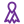

Atención cercana
Explicamos cada paso con palabras claras y sin apuros.
Ver detalleAtención cercana
El paciente recibe información comprensible sobre su situación, puede preguntar todas las veces que necesite y decide acompañado del profesional.
En OncoMax brindamos orientación, asistencia médica y acompañamiento humano para pacientes y familias durante todo el proceso de atención.
+7 años acompañando pacientes y familias
Conoce OncoMax en un minuto
Cada tarjeta gira y muestra la explicación completa por detrás.
Pasa el mouse, tócala o llega con la tecla TabExplicamos cada paso con palabras claras y sin apuros.
Ver detalleEl paciente recibe información comprensible sobre su situación, puede preguntar todas las veces que necesite y decide acompañado del profesional.
Oncología médica, quirúrgica y pediátrica en un mismo lugar.
Ver detalleDoctores y enfermeras trabajan de forma coordinada, así el paciente no tiene que repetir su historia en cada consulta.
Acompañamos a quienes cuidan al paciente.
Ver detalleDamos orientación a familiares y amigos para que sepan cómo ayudar, cómo escuchar y cómo cuidarse ellos mismos.
Pasa el mouse sobre cada tarjeta para ver qué incluye esa página.

Atención y acompañamiento integral.
Conoce las áreas de atención disponibles: oncología pediátrica, oncología quirúrgica y acompañamiento integral.
EntrarEspecialistas y apoyo domiciliario.
Revisa a los profesionales, el calendario de atención y los tres pasos para solicitar una consulta.
EntrarEl equipo humano de OncoMax.
Descubre la historia de la clínica, la galería y la biografía de doctores y enfermeras.
EntrarInformación educativa básica.
Aprende con mitos y realidades, un cuestionario para autoevaluarte y señales a las que conviene prestar atención.
Entrar
Mensajes para pacientes y familias.
Encuentra frases de aliento y consejos concretos para acompañar con respeto y cariño.
Entrar
Formulario de reserva.
Elige un servicio, una fecha y deja tus datos de contacto. También encontrarás el croquis para llegar.
EntrarAl hacer clic en una pregunta, el navegador abre la respuesta por sí solo.
Sí, puedes solicitarla desde la página Reserva o comunicarte por WhatsApp.
Sí, contamos con información y atención de oncología pediátrica.
No. Esta página es educativa y una evaluación siempre debe realizarla un profesional.
Sí. Recomendamos venir con una persona de confianza que ayude a anotar las indicaciones.
Escríbenos por WhatsApp o déjanos tus datos y la clínica se comunica contigo.